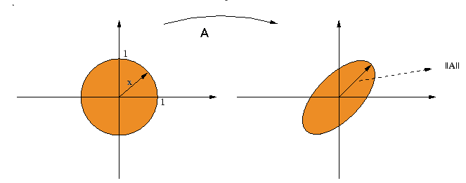

| Choisissez votre langue ! | Choose your language ! |
Dans tout ce paragraphe nous avons affaire à des espaces vectoriels réels ou complexes de dimension finie.
Normes sur E
Si E est un espace muni d'un produit scalaire, nous avons déjà vu la définition de la des vecteurs de E.Cette norme possède les propriétés suivantes:
- ||x|| ≥ 0
- ||x||=0 ⇔ x=0
- ||x+y|| ≤ ||x|| + ||y||
- ||λx|| = |λ||x||
d(x,y) = ||x-y|| ∀ (x,y) ∈ E × E
Cette distance confère à E la qualité d'espace métrique et lui donne une topologie (ensembles ouverts et fermés).
Throughout this paragraph we are dealing with real or complex vector spaces of finite dimension.
Norms on E
If E is a space endowed with a scalar product, we have already seen the definition of the vectors of E.This norm has the following properties:
- ||x|| ≥ 0
- ||x||=0 ⇔ x=0
- ||x+y|| ≤ ||x|| + ||and||
- ||λx|| = λ||x||
d(x,y) = ||x-y|| ∀ (x,y) ∈ E × E
With such distance E becomes a metric space with a topology (open and closed sets).
définition
Nous définirons donc comme '
norme
' sur E toute application possédant les quatre propriétés référencées ci-dessus.
definition
We will therefore define as ' norm' on E any mapping possessing the four properties referenced above.
Nous allons voir qu'il existe beaucoup de telles 'normes' sur Kn. Voici quelques exemples, nous utiliserons un indice pour les différencier.
||x||∞=Sup(|x1|,...,|xn|)
||x||1=|x1|+...+|xn|
et plus généralement
||x||p=(|x1|p+...+|xn|p)1/p
Cette liste n'est évidemment pas exhaustive. Si || || est une norme et si k est un nombre positif alors k|| || est également une norme, mais il existe bien d'autres possibilités.
De fait, la norme 'euclidienne' que nous avons définie précédemment correspond au cas p=2 dans l'exemple ci-dessus, on la note aussi L2. On a ainsi les normes L1, L2,...., L∞.
||x||∞=Sup(|x1|,...,|xn|)
||x||1=|x1|+...+|xn|
et plus généralement
||x||p=(|x1|p+...+|xn|p)1/p
Cette liste n'est évidemment pas exhaustive. Si || || est une norme et si k est un nombre positif alors k|| || est également une norme, mais il existe bien d'autres possibilités.
De fait, la norme 'euclidienne' que nous avons définie précédemment correspond au cas p=2 dans l'exemple ci-dessus, on la note aussi L2. On a ainsi les normes L1, L2,...., L∞.
We will see that there are many such 'norms' on Kn . Here are some examples, we will use a subscript to name them apart.
||x||∞=Sup(|x1|,...,|xn|)
||x|| 1=|x1|+...+|xn|
and more generally
||x||p= (|x1|p +...+|xn|p )1/p
This list is obviously not exhaustive. If || || is a norm and if k is a positive number then k|| || is also a norm, but there are many other possibilities.
In fact, the 'Euclidean' norm that we defined previously corresponds to the case p=2 in the example above, it is also denoted by L2. We thus have the norms L1, L2,...., L∞.
||x||∞=Sup(|x1|,...,|xn|)
||x|| 1=|x1|+...+|xn|
and more generally
||x||p= (|x1|p +...+|xn|p )1/p
This list is obviously not exhaustive. If || || is a norm and if k is a positive number then k|| || is also a norm, but there are many other possibilities.
In fact, the 'Euclidean' norm that we defined previously corresponds to the case p=2 in the example above, it is also denoted by L2. We thus have the norms L1, L2,...., L∞.
définition
Deux normes || || et || ||' sont dites
'équivalentes'
s'il existe deux constantes k et h > 0 telles que : k||x|| ≤ ||x||' ≤ h||x|| ∀ x ∈ E.
definition
Two norms || || and || ||' are said
'equivalent'
if there are two constants k and h > 0 such that: k||x|| ≤ ||x||' ≤ h||x|| ∀ x ∈ E.
Des normes équivalentes définissent des distances équivalentes (au même sens) et la même topologie, les ouverts pour l'une sont exactement les ouverts pour l'autre.
Nous avons alors le théorème extrêmement important qui suit:
Nous avons alors le théorème extrêmement important qui suit:
Equivalent norms define equivalent distances (with the same meaning) and the same topology, the open ones for one are exactly the open for each other.
We then have the following extremely important theorem:
We then have the following extremely important theorem:
théorème
Sur un espace de dimension finie, TOUTES les normes sont équivalentes.
theorem
On a finite dimensional space, ALL norms are equivalent.
La démonstration de ce résultat n'est pas très difficile, mais elle n'a pas sa place dans cet exposé, il s'agit de techniques d'analyse n'ayant rien à voir avec l'algèbre en général ni avec l'algèbre linéaire en particulier. Nous citons ce résultat parce que nous pourrons en avoir besoin quand dans une démonstration on remplace, par exemple, une norme par une autre pour des raisons de commodité.
Nous allons maintenant voir qu'il existe une façon d'associer à toute norme de E une norme de L(E).
Normes sur L(E)
Rappelons que L(E) désigne l'ensemble des endorphismes de E. Nous avons vu que L(E) est un espace vectoriel de dimension finie n2 sur K. Le théorème précédent s'applique donc pleinement.Nous allons maintenant voir qu'il existe une façon d'associer à toute norme de E une norme de L(E).
The proof of this result is not very difficult, but it should not take place in this presentation, it uses techniques of calculus that have nothing to do neither with algebra in general nor with linear algebra in particular. We cite this result because we may have some need when in a proof we replace, for example, a norm by another for convenience.
We are now going to see that there is a way to associate to any norm of E a norm of L(E).
Norms on L(E)
Recall that L(E) denotes the set of endorphisms of E. We have seen that L(E) is a vector space of finite dimension n2 on K. The previous theorem therefore fully applies.We are now going to see that there is a way to associate to any norm of E a norm of L(E).
théorème
Soit en effet || || une norme sur E et u un élément de L(E), on désigne par U la 'boule unité fermée' de E c'est à dire l'ensemble des vecteurs x ∈ E vérifiant ||x|| ≤ 1. Nous admettrons que dans le cas de la dimension finie, toutes les applications linéaires sont bornées en ce sens que \(\left\|u \right\|=Sup_{x\in U}\left\|u(x) \right\|\)
est un nombre fini (cela résulte de propriétés de compacité, c'est donc un résultat d'analyse plus que d'algèbre pure).Alors ||u|| définit une norme sur L(E) et on a:
||u(x)|| ≤ ||u||×||x||
theorem
Let indeed || || a norm on E and u a element of L(E), we designate by U the 'closed unit ball' of E that is to say the set of vectors x ∈ E satisfying ||x|| ≤ 1. We will admit that in the finite dimensional case, all linear maps are bounded in the sense that \(\left\|u \right\|=Sup_{x\in U}\left\|u(x) \right\|\)
is a finite number (this results from properties of compactness, so it is a result of analysis more than of pure algebra). Then ||u|| defines a norm on L(E) and we have: ||u(x)|| ≤ ||u||×||x|| La démonstration de ce résultat ne présente aucune difficulté et nous ne la proposons pas ici. Le lecteur pourra vérifier cela à titre d'exercice.
Il pourra également vérifier que:
Il pourra également vérifier que:
The proof of this result does not present any difficulty and we do not offer it here. The reader can verify this as of exercise.
He can also verify that:
He can also verify that:
propriété
||vou|| ≤ ||v||×||u||
property
||vou|| ≤ ||v||×||u||
Cependant (voir exercice), tout cela n'est plus vérifié dans le cas de la dimension infinie.
Sauf mention expresse du contraire, nous choisirons sur E la norme L2 et sur L(E) la norme associée.
On a donc sur M(n,K) toutes les normes L1, L2, ...,Lp, ...L∞ de Kn2 .
Mais si nous choisissons pour référence la base canonique de Kn, M(n,K) s'identifie à L(E), et nous pouvons aussi bien définir la norme d'une matrice A, comme la norme de l'endomorphisme associé.
Toutes ces normes coexistent sur M(n,K) et elles sont toutes équivalentes !
Sauf mention expresse du contraire, nous choisirons sur E la norme L2 et sur L(E) la norme associée.
Normes sur M(n,K)
M(n,K) désigne, rappelons le, l'algèbre des matrices carrées d'ordre n à coefficients dans K. On sait que M(n,K) s'identifie à Kn2 .On a donc sur M(n,K) toutes les normes L1, L2, ...,Lp, ...L∞ de Kn2 .
Mais si nous choisissons pour référence la base canonique de Kn, M(n,K) s'identifie à L(E), et nous pouvons aussi bien définir la norme d'une matrice A, comme la norme de l'endomorphisme associé.
Toutes ces normes coexistent sur M(n,K) et elles sont toutes équivalentes !
However (see exercise), all of this is no longer true in the case of infinite dimension.
Unless expressly stated to the contrary, we will choose on E the norm L2 and on L(E) the associated norm.
We therefore have on M(n,K) all the norms L1, L2, ...,Lp, ...L∞ of Kn2 .
But if we choose as reference the standard basis of Kn , M(n,K) is identified with L(E), and we can also define the norm of a matrix A, like the norm of the associated endomorphism.
All these norms coexist on M(n,K) and they are all equivalent!
Unless expressly stated to the contrary, we will choose on E the norm L2 and on L(E) the associated norm.
Norms on M(n,K)
M(n,K) denotes, let us recall, the algebra of square matrices of order n with coefficients in K. We know that M(n,K) is identified with Kn2 .We therefore have on M(n,K) all the norms L1, L2, ...,Lp, ...L∞ of Kn2 .
But if we choose as reference the standard basis of Kn , M(n,K) is identified with L(E), and we can also define the norm of a matrix A, like the norm of the associated endomorphism.
All these norms coexist on M(n,K) and they are all equivalent!
définition
Sauf mention expresse du contraire si A désigne une matrice quelconque de M(n,K), nous poserons: ||A||=||u|| où u est l'endomorphisme de Kn associé à A par le choix de la base canonique.
||u|| étant la norme associée à la norme euclidienne L2.
definition
Unless expressly stated otherwise, if A denotes any matrix of M(n,K), we will set: ||A||=||u|| where u is the endomorphism of Kn associated with A by the choice of the standard (canonical) basis.
||u|| being the norm associated with the Euclidean norm L2.
Il résulte donc de la définition précédente que:
It therefore follows from the previous definition that:
propriété
\(\left\| A\right\|=Sup_{X.X\leqslant 1}\left\|AX \right\|\)
property
\(\left\| A\right\|=Sup_{X.X\leqslant 1}\left\|AX \right\|\)
et aussi que :
and also that :
propriété
||AX|| ≤ ||A||×||X|| ∀ X vecteur colonne de Kn
property
||AX|| ≤ ||A||×||X|| ∀ X column vector of Kn
et enfin que :
and finally that :
propriété
||AB|| ≤ ||A||×||B||
property
||AB|| ≤ ||A||×||B||
L'image qui suit permet de visualiser une norme matricielle.
The following image shows a matrix norm.

Base image: Eric Brunelle Université de Montréal
Exemples de calcul
La norme de la matrice nulle est 0La norme de la matrice identité est 1
La norme d'une matrice diagonale A = (ai,j) est Sup(|ai,i|)1≤i≤n
L'appliquette suivante représente une application linéaire de ℝ2 dans ℝ2.
- Le vecteur u tracé en vert représente l'image de i=(1,0).
- Le vecteur v tracé en vert aussi représente l'image de j=(0,1).
- La matrice M de type(2,2) à gauche représente la matrice de l'application linéaire par rapport à la base canonique de ℝ2.
- Les vecteurs u et v représentent donc les colonnes de la matrice.
- Vous pouvez faire varier ces deux vecteurs en attrapant leur extrémité avec la souris par un tirer-déplacer (drag'n drop).
- La matrice est mise à jour au cours de cette opération.
- Sa norme apparaît dans la case à côté à droite de la matrice.
- L'ellipse tracée en jaune est l'image du cercle unité.
- La norme de M correspond à la plus grande norme des vecteurs de l'ellipse.
- Le rayon de l'ellipse se place automatiquement dans la direction du plus grand axe.
- La norme de M est donc la longueur de ce rayon.
Calculation examples
The norm of the null matrix is 0The norm of the identity matrix is 1
The norm of a diagonal matrix A = (ai,j) is Sup(|ai,i|)1≤i≤n
The following applet represents a linear map on ℝ2.
- The vector u plotted in green represents the image of i=(1,0).
- The vector v drawn in green also represents the image of j=(0,1).
- The matrix M of type (2,2) on the left represents the matrix of the linear map with respect to the canonical basis of ℝ 2 .
- The vectors u and v therefore represent the columns of the matrix.
- You can change these two vectors by catching their end with the mouse by drag'n drop.
- The matrix is updated during this operation.
- Its norm appears in the box next to the right of the matrix.
- The ellipse drawn in yellow is the image of the unit circle.
- The norm of M corresponds to the greatest norm of the vectors of the ellipse.
- The radius of the ellipse is automatically placed in the direction of the largest axis.
- The norm of M is therefore the length of this radius.
|
Création Gilles Dubois
Created by Gilles Dubois
|
Janvier 2022
January 2022
|
Version mobile Jquery
Mobile Jquery version
|
|